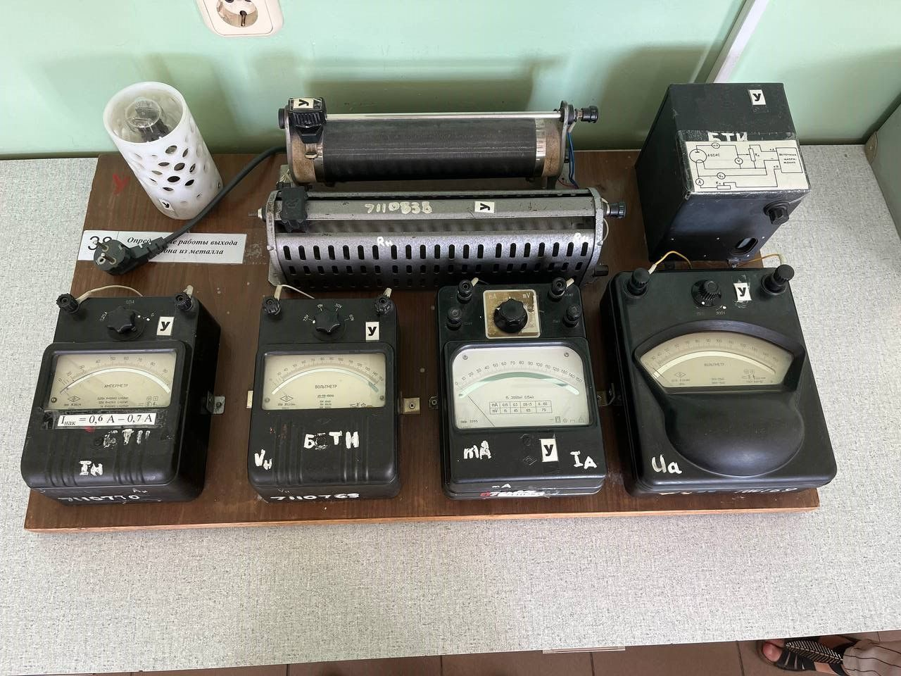

Структура базы знаний:
- Лабораторная работа называется определение работы выхода электрона из металла.
- Выпрямитель служит источником напряжений для анодной цепи.
- Выпрямитель служит источником напряжений для цепи накала катода.
- Величина анодного напряжения Uа регулируется делителем Ra.
- Анодное напряжение Uа измеряется вольтметром V1.
- Сила анодного тока Iа измеряется миллиамперметром mA.
- Напряжение накала Uнак измеряется вольтметром V2.
- Сила тока накала Iнак регулируется переменным резистором Rнак.
- Сила тока накала Iнак измеряется амперметром А.
- Плотность тока насыщения jн определяется по формуле Ричардсона-Дешмена.
- Сила тока насыщения связана с плотностью тока насыщения jн.
- Сила тока насыщения связана с площадью катода S.
- Величина работы выхода А электрона не зависит от температуры.
- Величина работы выхода электрона считается постоянной в узком температурном интервале.
- Силы тока насыщения измеряются при температурах Т1 и Т2.
- Работа выхода А выражается в электрон-вольтах.
- Формула (38.4) учитывает значение постоянной Больцмана k.
- Газовая постоянная Больцмана равна 1,38 ⋅ 10^(–23) Дж/K.
- Расчетная формула получается для работы выхода А.
- Температура катода определяется косвенными методами.
- Методы определения температуры катода основаны на зависимостях мощности или сопротивления от температуры.
- Потребляемая мощность PT вычисляется по закону Джоуля–Ленца.
- Потребляемая электронном мощность равна Uнак ⋅ Iнак.
- Сопротивление катода RT вычисляется по закону Ома.
- Сопротивление катода равно Uнак / Iнак.
- Температура катода определяется по графикам зависимости мощности или сопротивления от температуры.
- Графики зависимости PT и RT приведены в приложении к лабораторной работе.
- Амперметр - это прибор для измерения силы тока в амперах.
- Вольтметр - это измерительный прибор непосредственного отсчёта для определения разности электрических потенциалов, напряжения или ЭДС в электрических цепях.
- Выпрямитель - это преобразователь электрической энергии.
- Источник напряжения - это двухполюсник, напряжение на зажимах которого не зависит от тока.
- Лампа накаливания - это искусственный источник света.
- Миллиамперметр представляет из себя лабораторный прибор электромагнитной системы.
- Энергия напряжения - это скалярная физическая величина.
-
Установка выглядит следующим образом:
 -
Вольтметр выглядит следующим образом:
-
Амперметр выглядит следующим образом:
-
Выпрямитель выглядит следующим образом:
-
Источник энергии выглядит следующим образом:

-
Лампа накаливания выглядит следующим образом:

-
Миллиамперметр показан следующим образом на рисунке:
-
Энергия напряжения выглядит следующим образом:

-
Схема лабораторной установки представлена следующим образом:

-
Ричардсон-Дешман выглядит следующим образом:

-
Формула Ричардсона выглядит следующим образом:

-
Формулы величины силы тока насыщения выглядят следующим образом:

-
Формула работы выхода электрона выглядит следующим образом:

- Электрон выходит из металла под действием энергии.
- Работа выхода - это энергия удаления электрона.
- Энергия измеряется в электрон-вольтах.
- Плотность тока насыщения зависит от температуры и работы выхода.
- Формула Ричардсона-Дешмена описывает зависимость плотности тока от температуры.
- Катод нагревается для эмиссии электронов.
- Анод принимает электроны из катода.
- Источники напряжения создают электрическое поле между анодом и катодом.
- Температура катода определяется током и напряжением накала.
- Ток насыщения измеряется при двух температурах.
- Работа выхода вычисляется через формулу с логарифмами токов.
- Вакуумный диод состоит из анода и катода.
- Анодный ток зависит от напряжения анода.
- Электрическое поле создает условия для движения электронов.
- Формула включает постоянную Ричардсона, температуру и работу выхода.
- Постоянная Ричардсона характеризует интенсивность эмиссии.
- Эмиссия происходит при достаточной энергии для преодоления барьера.
- Двойной электрический слой удерживает электроны у поверхности металла.
- Работа выхода зависит от структуры поверхности металла.
- Ток накала влияет на температуру катода.
- Эмиссия увеличивается с ростом температуры катода.
- Ток анода пропорционален напряжению на катоде.
- Вакуумный диод работает в условиях низкого давления.
- Катод покрывается пленкой для улучшения эмиссии.
- Электрическое поле ускоряет электроны в направлении анода.
- Температура катода зависит от мощности накального тока.
- Двойной электрический слой создает потенциальный барьер.
- Формула Ричардсона-Дешмена включает температуру в квадрате.
- Энергия преодолевается за счет теплового движения электронов.
- Работа выхода снижается при наличии окислов на поверхности.
- Ток насыщения увеличивается при улучшении вакуума.
- Эмиссия обеспечивается напряжением и температурой.
- Температура накала измеряется оптически или термопарами.
- Эмиссия характеризует свойства материала катода.
- Работа выхода изучается в физике твердого тела.
- Анодный ток определяется параметрами вакуума.
- Работа выхода измеряется в электрон-вольтах.
- Температура катода регулируется током накала.
- Эмиссия увеличивается при уменьшении работы выхода.
- Постоянная Ричардсона является физической константой.
- Катод излучает электроны под действием нагрева.
- Электрическое поле определяет направление движения электронов.
- Работа выхода характеризует способность материала к эмиссии.
- Термоэлектронная эмиссия происходит при нагреве металла.
- Работа выхода определяет пороговую энергию для эмиссии.
- Фотоэффект объясняет выход электрона под действием света.
- Эмиссионные свойства зависят от кристаллической решётки.
- Поверхностные дефекты влияют на величину работы выхода.
- Фотоны обеспечивают энергию для перехода электрона.
- Работа выхода анализируется для выбора материалов.
- Температура влияет на интенсивность эмиссии.
- Фотонная энергия зависит от частоты света.
- Катод нагревается для обеспечения термоэмиссии.
- Работа выхода влияет на эффективность эмиссии.
- Эмиссия усиливается в сильном электрическом поле.
- Фотоэффект доказывает связь света и электроники.